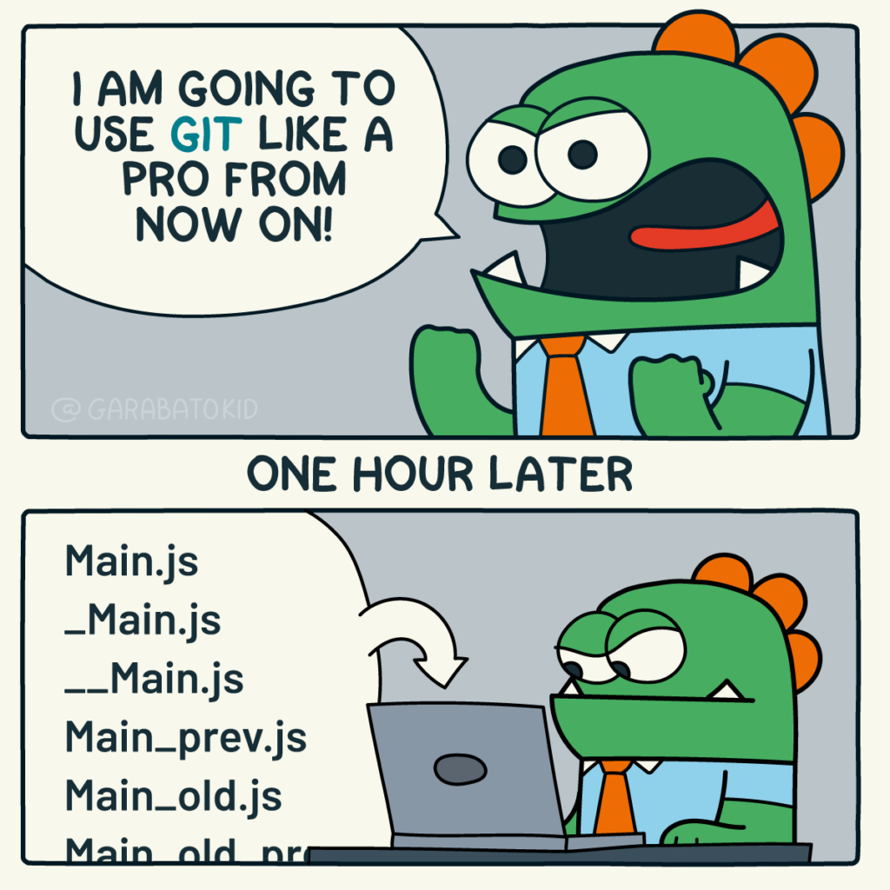
We’ve all been Dino at some point. Lets aim for something better!
Reviewing a draft document (offline)
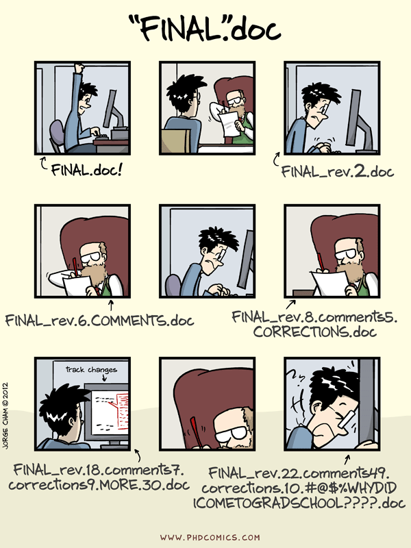
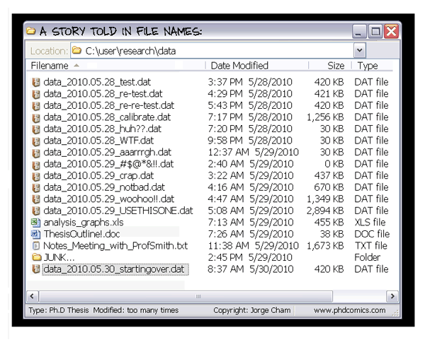
A group coding project
In research and software projects, many people may work on the same files: scripts, data notes, reports, documentation.
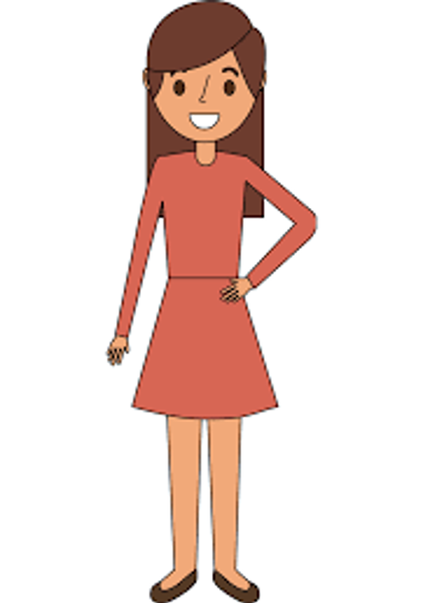
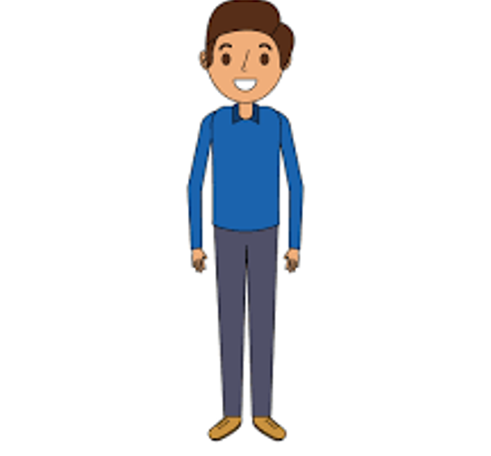
Each of them have the same copy of the code base of the project, but they are working on different parts of it.
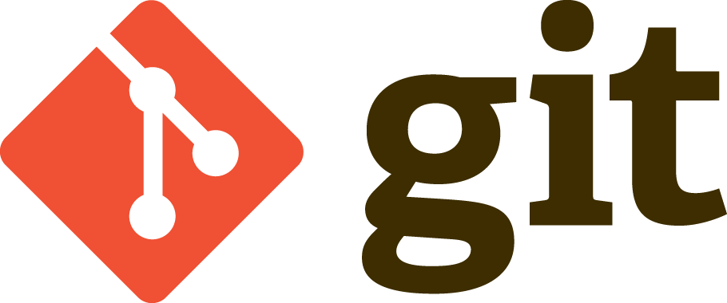
The workshop of today!
Where you edit files and experiment freely.
git add
→
Where you select changes for the next snapshot.
git commit
→
Where Git records snapshots you can revisit and compare.
A commit is like taking a snapshot of your project.
Working directory
Arrange, change, and experiment with the objects.
git add
→
Staging area
Choose which elements/objects will appear in the picture.
git commit
→
Git history
Save the snapshot in your photo album.
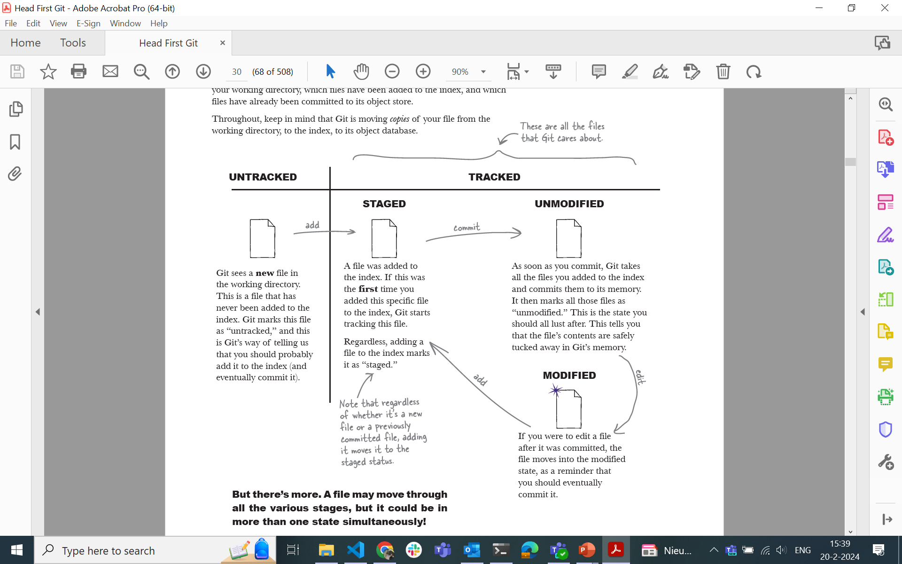
Head First Git explanation of tracked and staged files
Gandhi, R. (2022). Head First Git. O’Reilly Media.
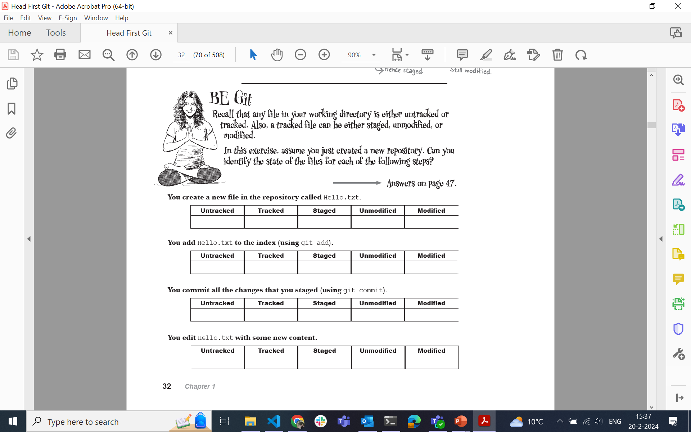
Head First Git reference figure
Gandhi, R. (2022). Head First Git. O’Reilly Media.
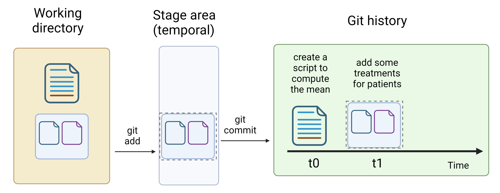
Git working directory staging and history status diagram
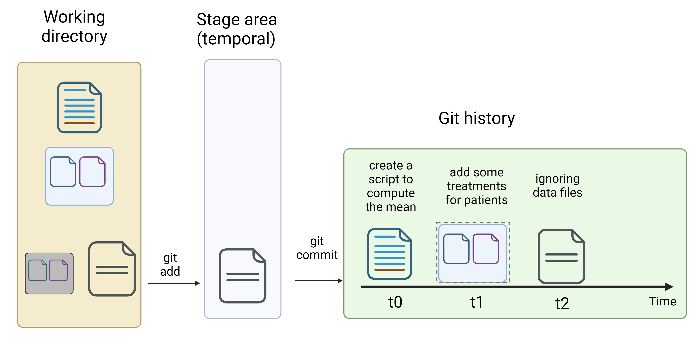
Expanded Git workflow diagram
git restore — described in the source presentation as the opposite of git add.
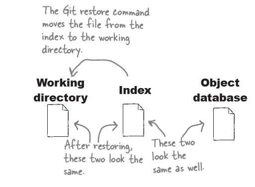
Git restore diagram
git restore --staged — described in the source presentation as the opposite of git commit.
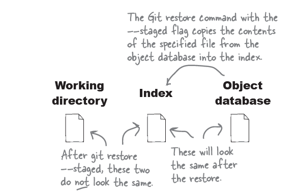
Git restore staged diagram